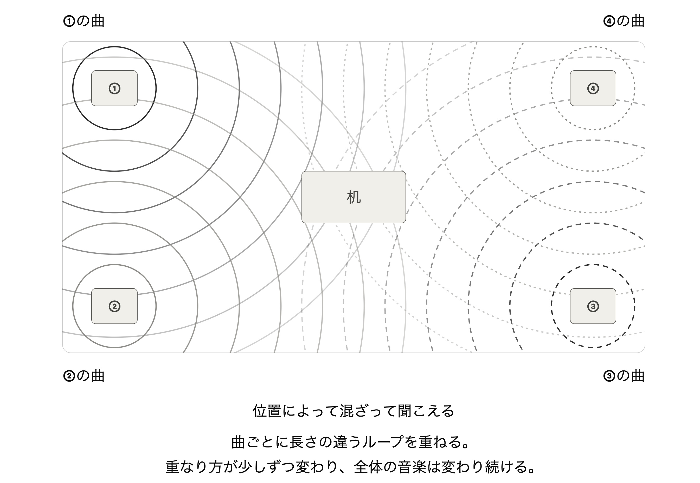

「空間としての音楽」をつくり、「置く」。
物理的な立体音響を、オフィス空間内に立ち上げる。
金子淳平 ／ 企画書 ／ 2026.10.3
スピーカーを複数個用意し、部屋やフロアの対象区域にまばらに配置する。
1つのスピーカーごとに、1曲ずつ流す。11月末は市販のスピーカー、その以降の開催は自作にする。
各曲は、長さを変えてループ再生し、少しずつずらして流していく。
各曲は、一度は聴いたことのある印象派音楽から引用したフレーズを編曲したものにする。編曲は、ピアノやヴァイオリンに電子音や環境音を重ねるものにする。
重なり方が少しずつ変わり、歩くことでも全体の音楽は変わり続ける。オフィスのような日常の空間に、歩きたくなる音楽、心地よさを感じる音楽を「置く」。

images/1.jpg
会議室に配置した際のイメージ
11/14と11/28に、脳科学を修士で専攻しているヴァイオリン奏者と、クラシック音楽とシンセサイザーのライブを行う。このライブのために編曲している音楽を、この作品にも使う。
そして、元々自分がギャラリーの外（日常の空間）で、マルチオーディオを実装したいと考えてきた。それを実装して次に繋げられれば、音楽を聴く空間自体を日常にデザインできるプロジェクトになると思う。
健康と音と結びつく実例を、一緒につくれる（歩きたくなる、話したくなる、リラックスする）。聴いている人のリラックス状態も脳波で計測できる。
関係性のデザインの考え方と接点がある。
やってみたかった、ギャラリーの外でマルチチャンネルを実装する機会になる。これまで取り組んできた、関係性や情報の音の実践の発展としてできる。
日常で使用されるスピーカーは、ずっと2チャンネルが当たり前だった。
サウンドアートの立体音響を使えば、音楽自体のあり方が変わる。どのスピーカーで流し、 どこで流さないかという配置によって空間を立体的に扱い、歩く場所によって重なり方が変わり、 聴こえてくる音楽そのものが変わっていく。
ただ、それは自分の実践としては、ギャラリーを一歩も出たことがなかった。多チャンネルの 実践を、日常の空間の中に持ち込んでいく。それが、これから続けていきたいこと。